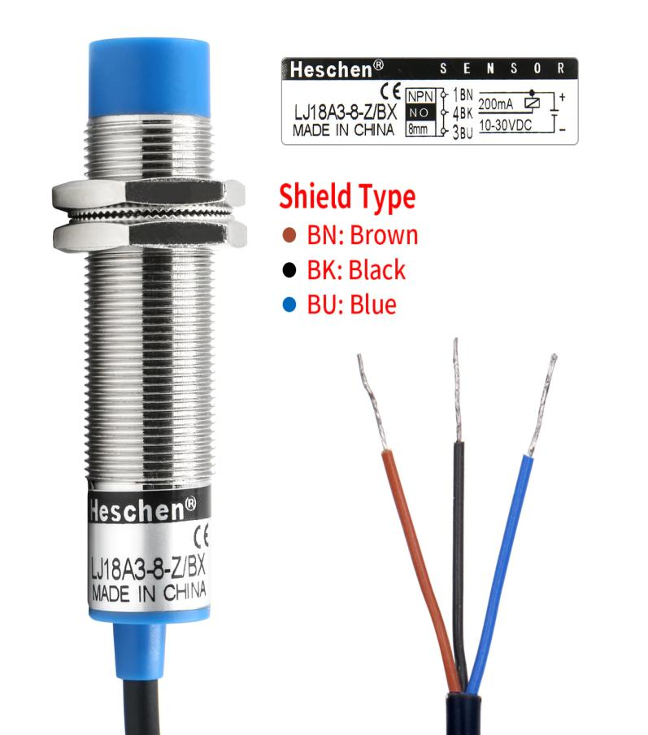
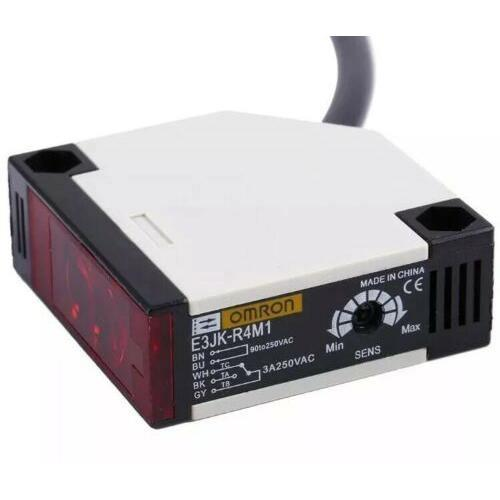
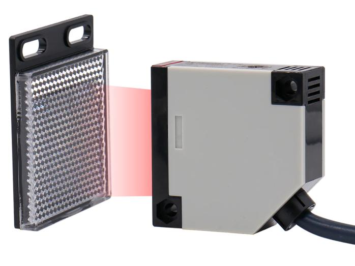
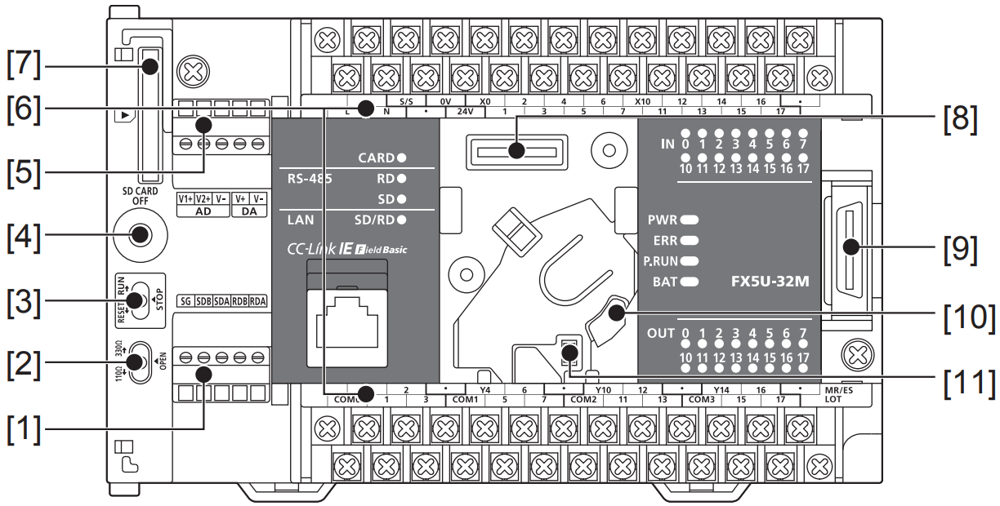
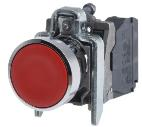
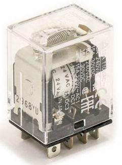
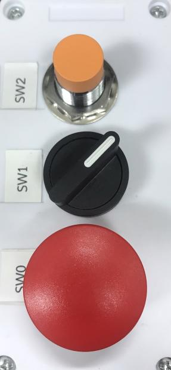

เซ็นเซอร์ & การต่อ I/O
โปรแกรมที่เขียนเก่งแค่ไหน ถ้าต่อ Hardware ผิดก็ใช้ไม่ได้ — บทนี้พาเข้าใจ Sink vs Source, วิธีอ่านสเปคเซ็นเซอร์อุตสาหกรรม, และต่อ Inductive Proximity (NPN) + Photoelectric Switch เข้ากับ FX5U ให้ทำงานครั้งแรกผ่านเลย
Sink vs Source — เรื่องที่ทำคนเริ่มต้นงงทุกราย
ความสับสนเกิดเพราะเรามองมุมไหน — ฝั่ง Sensor หรือฝั่ง PLC Mitsubishi และผู้ผลิตญี่ปุ่นนิยมมองจากฝั่ง PLC ดังนั้นเวลาเขาบอกว่า "Sink Input" หมายถึง PLC ดูดกระแสเข้า (กระแสไหลจาก Sensor → PLC)
Inductive Proximity Sensor — LJ18A3-8-Z/BX

| คุณสมบัติ | ค่า |
|---|---|
| ชนิด | Inductive (ตรวจจับโลหะ) |
| แรงดันใช้งาน | DC 6–36V (ที่นี่ใช้ 24V) |
| Output | NPN, Normally Open (NO) |
| ระยะตรวจจับ | 8 mm |
| สี/หน้าที่สายไฟ | 🟤 BN = +24V ⚫ BK = Signal 🔵 BU = 0V |
การต่อกับ FX5U
-
เตรียมไฟ DC 24V
ใช้ขั้ว
24Vและ0Vที่อยู่บนตัว PLC (FX5U มี Power supply ในตัว) — หรือใช้ Power Supply ภายนอกก็ได้ แต่ต้องต่อ 0V ร่วมกัน (Common GND) -
ต่อสายไฟ Sensor
- สาย 🟤 น้ำตาล (BN) → ขั้ว
+24Vของ PLC - สาย 🔵 น้ำเงิน (BU) → ขั้ว
0Vของ PLC - สาย ⚫ ดำ (BK = Signal) → ขั้ว Input ที่ต้องการ เช่น
X0
- สาย 🟤 น้ำตาล (BN) → ขั้ว
-
เชื่อม S/S เข้า +24V
ที่ FX5U ขั้ว Input จะมี
S/S(Source/Sink common) — สำหรับ Sink Input ต้องต่อS/S → +24V - ทดสอบ เอาวัตถุโลหะ (เช่น ไขควง) เข้าใกล้หัวเซ็นเซอร์ — LED แดงจะติด และ X0 ใน PLC ควรเปลี่ยนเป็น ON
Photoelectric Sensor — OMRON E3JK-R4M1


| คุณสมบัติ | ค่า |
|---|---|
| ชนิด | Retroreflective (ใช้แผ่นสะท้อน) |
| ระยะตรวจจับ | 4 เมตร |
| แรงดันใช้งาน | DC 12–24V หรือ AC 90–250V (ขึ้นกับรุ่นย่อย) |
| Output Current | 3 A |
| อุณหภูมิใช้งาน | −30 °C ถึง +65 °C |
หลักการคือ Sensor ยิงแสงไปแผ่นสะท้อน — ถ้ามีวัตถุมาบัง แสงสะท้อนกลับไม่ได้ → Output เปลี่ยนสถานะ

อุปกรณ์ที่นิยมต่อกับ Output
ปลายทางของ Y output ของ PLC ไม่ได้มีแค่ Magnetic Contactor — มี Indicator, Actuator ฯลฯ อีกหลายแบบ:

การต่อ Output Y



FX5U-32MT (T = Transistor Output) เป็น Sink Output หมายความว่า Y0 จะ "ดูดกระแสลง 0V" เมื่อ ON — สิ่งที่ต่อเข้า Y0 ต้อง ต่อปลายอีกข้างเข้า +24V
- เลือก Load ที่จะควบคุม ถ้าเป็น Relay 24V DC ต่อ Coil ตรงเข้า Y0 ได้เลย — แต่ถ้าเป็น AC Load (เช่น Magnetic Contactor 220V) ต้องผ่าน Relay ก่อน เพราะ Transistor Output ของ FX5U รับได้แค่ DC
-
ต่อ Output
ขั้ว COM ของ Y รวม 4 ตัวเข้าด้วยกัน (เช่น Y0–Y3 ใช้ COM1)Y0 ─────► [Relay coil] ─────► +24V COM (0V) ─────────────────────────┘ (PSU) - ใส่ Diode Flywheel กับ DC Coil! ทุก Relay coil ต้องมีไดโอด (เช่น 1N4007) คร่อมหัว–ท้าย ขนานกัน ขั้ว Cathode (ขีดขาว) ชี้ไปที่ +24V — กัน Back EMF ทำให้ Transistor ของ PLC พัง
หน้าตา Lab Panel จริง
ตัวอย่างหน้าตาตู้ Lab ที่ภาควิชา EE — เห็น Push Button สีต่าง ๆ + Selector Switch + Mushroom Emergency Stop:

ตัวอย่างวงจรครบ — Light Curtain แบบง่าย
รวมความรู้ในบทนี้: สร้างระบบที่ หยุดมอเตอร์ทันที เมื่อมีคนเดินผ่านลำแสง
E3JK-R4M1
Photoelectric · NPN · NO
- BK Signal →
X4 - BN +24V
- BU 0V
FX5U-32MT/ES
Logic
X4= Photo OKY0= K1 driver- Self-hold ผ่าน X0/X1
K1 Contactor
Relay + Flywheel Diode
- 3-phase 220V
- Motor Output
; Ladder: มอเตอร์ติดเมื่อกด Start และ Sensor เห็นแสง
LD X0 ; Start
OR Y0 ; Self-hold
ANI X1 ; Stop
AND X4 ; Photo OK (NO contact ของ E3JK — เห็นแสง = ON)
OUT Y0 ; Motor Contactorก่อนไปบทถัดไป
- เข้าใจว่า FX5U-32MT/ES ต้องคู่กับ Sensor NPN และต่อ
S/S → +24V - สายเซ็นเซอร์: BN = +V, BU = 0V, BK = Signal
- Transistor Output ต่อกับ DC load ตรง — กับ AC load ต้องผ่าน Relay พร้อม Flywheel Diode
- ก่อนเปิดไฟ เช็คขั้วทุกตัว — ผิดพลาดทาง Wiring ทำให้ PLC พังง่ายกว่าโปรแกรมผิด